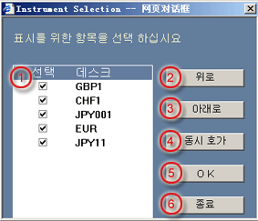

거래을 위한 기구/계기 선택하기
메뉴 상의 기구 버튼으로 기구 선택 대화창을 연다. 대화창에서 사용자는 다음과 같은 작동을 행할 수 있다:
| 1 | 선택 - 거래을 위한 기구를 선택하기 위해 클릭 |  |
| 2 | 위로 이동 -한 번 클릭에 선택된 기구를 위로 한 줄 이동하기 위해 | |
| 3 | 아래로 이동 - 한 번 클릭에 선택된 기구를 아래로 한 줄 이동하기 위해 | |
| 4 | 동시성을 가지게 하기 - 거래에 유효한 모든 기구에 대한 체계의 동시성을 가지게 한다. | |
| 5 | Ok - 변동사항 확인을 위해 | |
| 6 | 퇴장 - 대화창을 닫고 주 스크린으로 돌아 간다. |